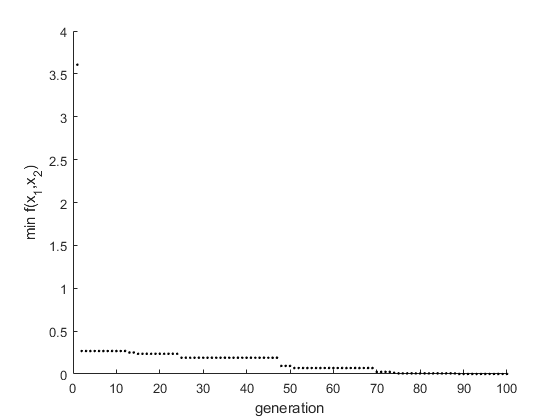

clear all
m = 50;
n = 2;
q = 11;
l = 2*q;
Pc = 0.85;
xu = 5;
xl = -5;
PR = 5;
PC = ceil(Pc*m);
PM = m-(PR+PC);
best(1) = 1000;
x = [-6:0.01:6];
y = [-6:0.01:6];
for i=1:length(x)
for j=1:length(y)
f(j,i) = (x(i)^2+y(j)-11)^2+(x(i)+y(j)^2-7)^2;
end
end
figure(1);clf;hold on
contour(x,y,f,15)
plot(3,2,'xk')
plot(-2.8,3.13,'xk')
plot(-3.78,-3.28,'xk')
plot(3.58,-1.85,'xk')
xlabel('x_1')
ylabel('x_2')
colormap(gray)
clear x
for k=1:m
mat_pool(k,:) = round(rand(1,l));
end
for k=1:m
x(k,1) = xl+(xu-xl)/(2^q-1)*bin2dec(num2str(mat_pool(k,1:q)));
x(k,2) = xl+(xu-xl)/(2^q-1)*bin2dec(num2str(mat_pool(k,q+1:l)));
end
plot(x(:,1),x(:,2),'k.')
for v=1:100
for k=1:m
x(k,1) = xl+(xu-xl)/(2^q-1)*bin2dec(num2str(mat_pool(k,1:q)));
x(k,2) = xl+(xu-xl)/(2^q-1)*bin2dec(num2str(mat_pool(k,q+1:l)));
F(k,1) = 1/((x(k,1)^2+x(k,2)-11)^2+(x(k,1)+x(k,2)^2-7)^2);
end
p = F/sum(F);
P = cumsum(p);
for k=1:PR
pointr = find(P>rand,1);
mat_pool_new(k,:) = mat_pool(pointr,:);
end
for k=1:2:PC
parent1 = mat_pool(ceil(m*rand),:);
parent2 = mat_pool(ceil(m*rand),:);
pointr = ceil(l*rand);
temp = parent1(pointr:l);
parent1(pointr:l) = parent2(pointr:l);
parent2(pointr:l) = temp;
mat_pool_new(k+PR,:) = parent1;
mat_pool_new(k+PR+1,:) = parent2;
end
for k=1:PM
temp = mat_pool(ceil(m*rand),:);
a = ceil(rand*l);
if temp(a)==1
temp(a) = 0;
else
temp(a) = 1;
end
mat_pool_new(PR+PC+k,:) = temp;
end
mat_pool = mat_pool_new;
if 1/max(F)<min(best)
best(v) = 1/max(F);
best_location = find(F==max(F),1);
x_opt(v,:) = x(best_location,:);
else
best(v) = min(best);
x_opt(v,:) = x_opt(v-1,:);
end
end
figure(2);clf;hold on
plot(x(:,1),x(:,2),'k.')
colormap(gray)
x = [-6:0.01:6];
y = [-6:0.01:6];
for i=1:length(x)
for j=1:length(y)
f(j,i) = (x(i)^2+y(j)-11)^2+(x(i)+y(j)^2-7)^2;
end
end
contour(x,y,f,15)
plot(3,2,'xk')
plot(-2.8,3.13,'xk')
plot(-3.78,-3.28,'xk')
plot(3.58,-1.85,'xk')
xlabel('x_1')
ylabel('x_2')
figure(3);clf;hold on
plot(best,'k.')
xlabel('generation')
ylabel('min f(x_1,x_2)')
figure(4)
plot(x_opt(:,1),'k.')
xlabel('generation')
ylabel('optimum value of x_1')
figure(5)
plot(x_opt(:,2),'k.')
xlabel('generation')
ylabel('optimum value of x_2')
x_opt(end,:)
ans =
-3.7787 -3.2853
